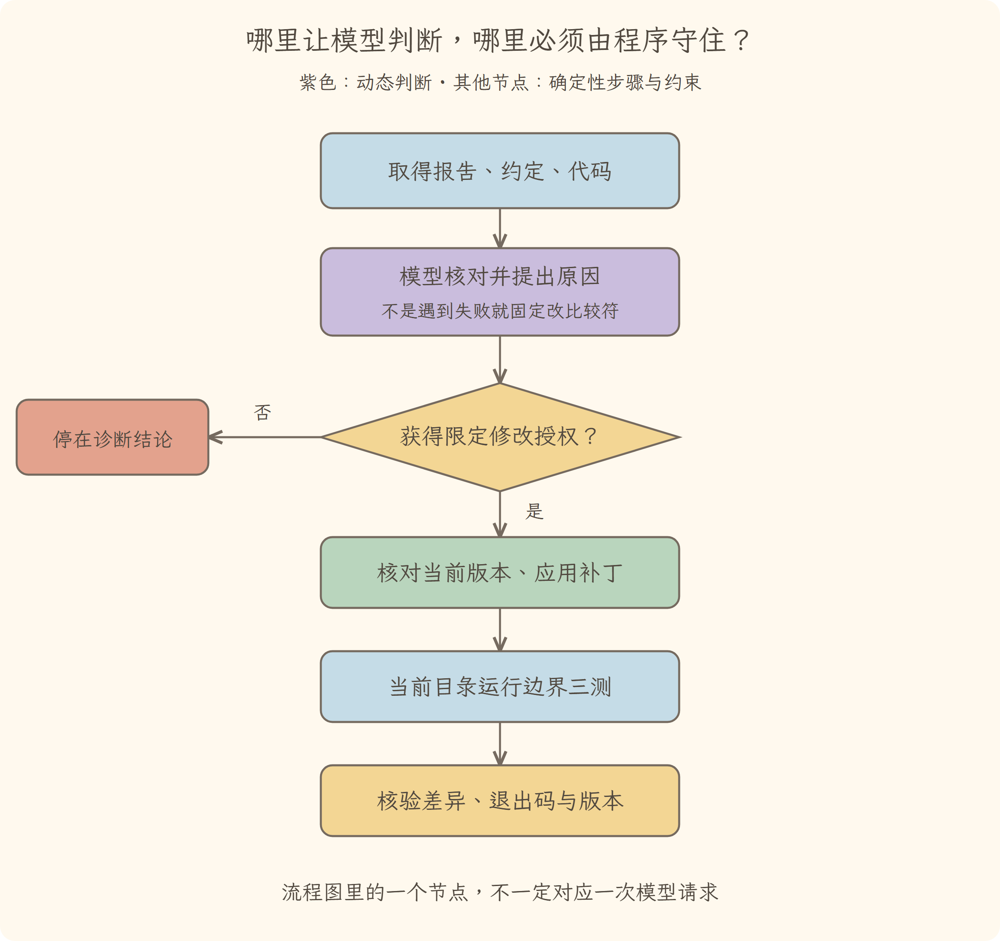
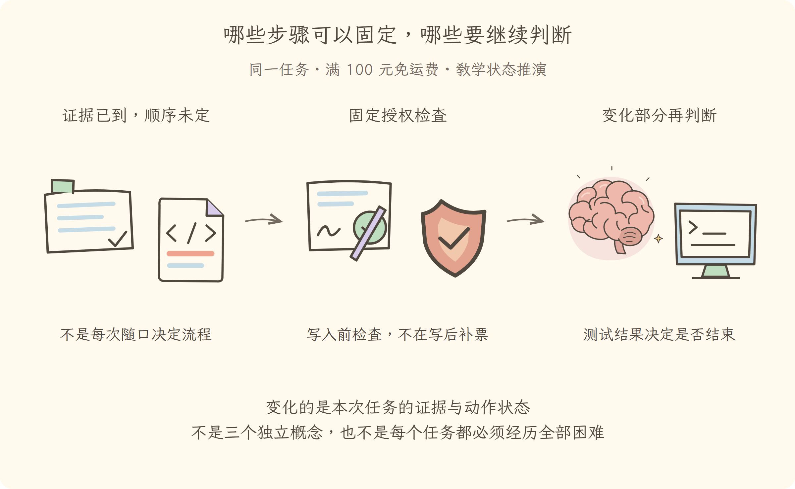

学习导航
第11讲 · 哪些步骤可以固定，哪些要继续判断
源码基线：cd5ef8148158c3a752a658978873241fdf8e2bbc。业务案例为虚构 Java 运费服务；图与流程是教学推演，源码事实另有固定证据。
从这里接上
多份子任务结果到齐，但处理顺序不能靠随口约定。本讲要回答：哪些步骤可以固定，哪些要继续判断？
上一讲解决了“把独立证据任务分开，主助手负责核对与授权边界”；这仍不能代替本讲要补的责任。
阅读与完成标准
先看逐步讲解，再做练习。视觉课件用于复习，词典随用随查，不要求先背英文。预计正文阅读 20–35 分钟，练习 10–20 分钟；这是安排建议，不是学会的证明。
读完应能解释：是不是把每一步都写死就更可靠？ 还要能预测：工作流返回部分结果但被取消，能报告整体成功吗？ 最后从源码证据定位相应责任。
现在必须懂的是本讲怎样改变证据或动作状态；具体框架中的其他选项知道存在即可，不用一次读完整个包。语法卡住可查补课 A、补课 B，工程定位查补课 C，看完返回此处即可。
工程深度验收
能分开元数据、脚本执行顺序、子任务配额与结果收束；能将开放判断和确定性授权、验收组合。 先预测练习中的分支，再按正文命令观察；只读解释、测试替身和真实执行环境分别记录，不混为一项。
本讲交接
固定安全检查和验收，保留假设选择的动态判断。但下一步还要解决：缺少执行器，为什么配置写了还不能开工。
← 第10讲：分工与后台 · 第12讲：配置装配 →
视觉课件
第11讲 · 哪些步骤可以固定，哪些要继续判断
工程图解：哪里让模型判断，哪里必须由程序守住？

能分开元数据、脚本执行顺序、子任务配额与结果收束；能将开放判断和确定性授权、验收组合。 本图与原有场景图互补，具体分支与边界见逐步讲解。
源码基线：cd5ef8148158c3a752a658978873241fdf8e2bbc。业务案例为虚构 Java 运费服务；图与流程是教学推演，源码事实另有固定证据。
当前现场
多份子任务结果到齐，但处理顺序不能靠随口约定。固定业务约定不变：满 10000 分免运费；原实现在等于时返回 800。禁止用修改预期的方式让测试变绿。

三分钟复述
先描述左格缺什么，再说明中格采取的机制，最后指出右格新增了哪些证据或责任。固定安全检查和验收，保留假设选择的动态判断。不要只读图上的物件名；删掉中间这项机制，任务会在哪一步失去依据？
本讲最容易误会的是：工作流返回部分结果但被取消，能报告整体成功吗？ 不能。部分证据可以保留，但非正常停止要按错误或取消报告，并等待必要清理。
从图返回源码
图只表达教学关联与状态变化，不代替完整调用顺序。源码定位提供实现或契约证据，正文解释映射和边界。
← 第10讲：分工与后台 · 第12讲：配置装配 →
逐步讲解
第11讲 · 哪些步骤可以固定，哪些要继续判断
源码基线：cd5ef8148158c3a752a658978873241fdf8e2bbc。业务案例为虚构 Java 运费服务；图与流程是教学推演，源码事实另有固定证据。
一、两份报告到齐，处理顺序能不能固定下来
第十讲把业务约定和实现分开读取。现在甲乙均返回证据，主助手每次都要做同样的安全检查：确认出处、判断是否存在矛盾、检查修改授权、运行验收。重复出现的确定步骤值得固定；原因假设和下一份该读的材料则可能随现场变化。
Workflow（工作流程）描述多个动作怎样组织。不要把它自动理解成“图里的每个方框就是一步模型调用”。在本项目的可选工作流能力里，模型可以提交编排脚本，由引擎执行并启动子任务；它不是替代默认智能体循环的唯一模式。
三格为同一运费任务的教学状态变化或故障对照。图不是实际运行日志；关键区别见各格说明。
二、写死不该变化的约束，保留需要判断的位置
对于运费任务，金额单位、授权边界和三测要求应明确固定。若报告显示的不是边界失败，而是方法未找到，就应改变排查方向；这部分不能靠一条固定补丁流水线硬做。
因此先读证据、再选择假设；固定的是“修改前要授权”和“当前版本要重测”，不是“任何失败都把大于改为大于等于”。把正确的本例答案写进通用自动修复程序，会让它在下一种故障上自信地改错。
可以类比 Java 业务流程中的确定性校验与规则选择。模型适合处理开放材料，但不应独占权限和验收的最终约束。
三、流程引擎与面向模型的工具怎么分工
模型工具负责接收脚本和参数、调用引擎、整理最终结果。引擎负责运行、子任务上限、取消和释放。元数据里的阶段名字只是给观察者看的进度名称，不会自动形成依赖图；真正顺序由脚本执行结构决定。
以下是固定提交中的定位片段（连续原文；中文说明放在代码之外）：
let result: WorkflowResult | undefined
try {
result = await run.result
const error = stopReasonError(result)
if (error !== undefined) {
// Map a non-clean finish to an isError result (the registry turns a
// throw into an isError). Report the reason, not partial output.
throw new Error(error)
}
return {
runId: run.id,
agentsStarted: result.agentsStarted,
result: result.value as JsonValue,
}
} finally {
exec.signal.removeEventListener('abort', onAbort)
try {
// Keep member listeners alive through disposal: an engine may
// synthesize cancelled member endings while reaching quiescence.
await run.dispose()
这段先等待 run.result，检查停止原因，非正常完成会形成工具错误；最后无论成功还是失败都释放运行对象。不要只看“拿到一个结果对象”，就认为结果已经成功；其停止原因和清理是否完成仍有意义。
finally 与 Java 的最终清理结构相似，但异步子任务和取消传播让清理本身也需要等待。它不是打印一句“流程结束”就算资源收回。
3.1 继续进入引擎，别停在工具包装层
选择本项目工作线程后端时，引擎启动先校验元数据和脚本语法，解析子任务提供者、核对总启动上限，再生成运行标识与工作线程初始化数据。元数据里的阶段名字不是执行依赖，真正先后由脚本的等待与分支表达。
例如本例脚本让两个子任务独立读证据，等待两份结果后核对，再决定是否申请修改。只把元数据写成“读取、修改、测试”，却没有在脚本里等待读取结果，既不会自动产生依赖图，也不会帮你阻止过早写入。可以把元数据看成项目看板的栏目，脚本才是实际调度指令。
启动前语法错误可以同步拒绝；已经返回运行对象之后，失败通过结果中的停止原因表达。这是两个不同边界。外层工具要先等待结果，再检查停止原因；直接读取 result.value（结果值）而忽略原因，就可能把被取消后的部分输出写成完整交卷。
3.2 三种预算分别防什么失控
同时启动多少子任务、整次最多启动多少子任务、一次批处理接受多少项，是不同上限。前者控制同时占用资源，第二个阻止“每次只开一个却永远开下去”，第三个避免一次提交巨大输入。只有并发上限不能阻止无限总工作量，就像 Java 线程池只有固定线程数，也不能保证生产者不会无限堆任务。
工作线程承载同步脚本，避免脚本的同步计算直接卡住宿主事件循环，并允许在必要时终止线程。但脚本运行环境不是安全隔离墙。模型生成脚本仍需要通过能力、权限和执行环境限制接触外部世界；不能把“另一个线程”误解为“另一个有严格权限边界的机器”。
四、一个安全的教学编排长什么样
下面是伪代码，只表达顺序，不是可直接调用上游引擎的完整脚本：
并行读取业务约定与实现证据
等待两份结果，并拒绝缺出处的结论
主助手核对报告与代码，输出原因
没有修改授权：结束在“原因已定位，未修改”
有修改授权：核对当前文件版本，再应用限定补丁
运行三项边界测试，交给独立验收规则
并行发生在独立读取之间；授权位于真正写入之前；验收位于实际修改和新测试之后。图若把这三条关系画反，再漂亮也会教错。
本图只画证据足以定位运费边界缺陷时的路径。若原因仍不确定，模型需要返回补证据，而不是继续执行预设补丁。流程化的是检查责任，动态的是根据材料选择假设和下一份证据。
在第二讲的教学循环里已经有相同分工：受控模型决定读哪份材料，执行器始终拒绝未授权修改。你可以替换模型的选择策略，但不应该顺便移除权限和最终验收。把它迁移到工作流引擎时，首先迁移这些不变量，再映射框架的节点和工具名。
五、脚本运行隔离不自动等于权限沙箱
可选后端使用工作线程与脚本执行环境，但不能由此推断任意不可信脚本都获得了绝对安全隔离。第七讲已经说明，执行边界需要具体能力与实际约束支持；流程引擎、工具管线和子任务权限仍各有责任。
如果一个流程超时或取消，不能返回部分结果并标为完整成功。部分证据可以保留，但需要注明哪些成员没有结束、哪些结论不能验证。这会接上第十六讲的验收。
沿宿主侧取消和处置继续：取消向工作线程发消息，也向子任务启动与运行传播信号；宽限期内仍不收束时，宿主可以终止工作线程。处置是幂等的，同一个返回承诺让重入清理加入既有过程，而不是重复清理子对象。
这里需要保留一个不舒服但重要的边界：等待是有上界的，超过宽限期仍慢于清理的子任务可能按契约被放弃等待，不代表它的外部副作用已经撤回。引擎保证自己这段生命周期如何收束，业务仍要处理未知结果。这与第八讲的崩溃窗口是同一个工程问题，不会因为改用流程引擎就消失。
实验可以用上游可控子任务提供者，观察取消、总数限制、发布后结果和清理路径，不必真的启动付费模型：
node node_modules/vitest/vitest.mjs run packages/workflow/workflow-worker-thread/tests/workflow-worker-thread.spec.ts --maxWorkers=1 --no-file-parallelism
这组会创建真实工作线程，测试环境的线程启动开销也会影响耗时。2026-09-06 作者在正常本地权限下执行该文件，54 项通过。先前受限环境中，加载器的系统用户查询失败，端到端断言得到错误而非完成；这是实际保留的失败记录，不是静默改成通过。定位后使用同一源码重跑，没有修改上游逻辑。真实线程、虚构子任务提供者仍不等于真实模型端到端评测。
六、为什么还要回看装配
到这里，概念上需要的能力都明确了。但实际配置中，工作流工具可能已经声明，执行引擎却没有加载；也可能文件服务不在当前范围。模型多请求几次解决不了缺能力的问题。
因此第十二讲不是突然换到一门框架课，而是面对本任务的下一类故障：“要用的机制已经讲清，运行中的工作台却没装全。”我们从这里进入装配、清理、接线和协作的工程实现。
← 第10讲：分工与后台 · 第12讲：配置装配 →
分享稿
第11讲 · 哪些步骤可以固定，哪些要继续判断
工程复述时，不要只背术语：能分开元数据、脚本执行顺序、子任务配额与结果收束；能将开放判断和确定性授权、验收组合。 用练习中的反例说明边界，再展示对应实现和实际测试结果。
源码基线：cd5ef8148158c3a752a658978873241fdf8e2bbc。业务案例为虚构 Java 运费服务；图与流程是教学推演，源码事实另有固定证据。
用自己的话讲给同事
我们还在查同一个 Java 运费问题：满 100 元应免运费，恰好边界却收了 8 元。走到本讲，已有条件是：多份子任务结果到齐，但处理顺序不能靠随口约定。
如果不补这一层，会遇到的问题是：是不是把每一步都写死就更可靠？ 不是。固定安全约束与验收有价值，但原因假设应随材料变化；不能给每种失败套同一补丁。 所以本讲新增的不是要背的名词，而是任务中一项明确的责任。
现在能做到：固定安全检查和验收，保留假设选择的动态判断。但还要守住反例：工作流返回部分结果但被取消，能报告整体成功吗？ 不能。部分证据可以保留，但非正常停止要按错误或取消报告，并等待必要清理。
请结合本讲图说出变化，再指向源码；不要宣称这段教学推演就是实际模型日志。下一讲顺着“缺少执行器，为什么配置写了还不能开工”继续。